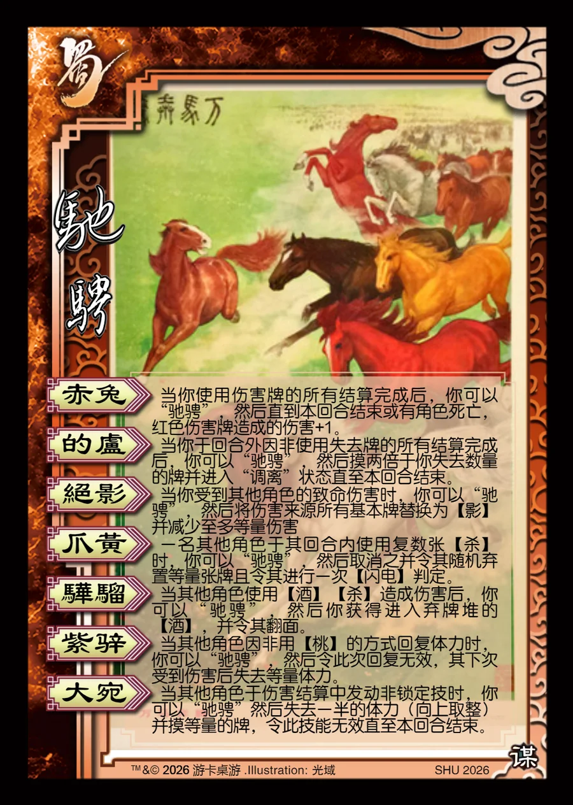

点击卡面查看大图
蜀
马超·驰骋
— 技能卡赤兔
当你使用伤害牌的所有结算完成后，你可以“驰骋”，然后直到本回合结束或有角色死亡，红色伤害牌造成的伤害+1。
的卢
当你于回合外因非使用失去牌的所有结算完成后，你可以“驰骋”，然后摸两倍于你失去数量的牌并进入“调离”状态直至本回合结束。
绝影
当你受到其他角色的致命伤害时，你可以“驰骋”，然后将伤害来源所有基本牌替换为【影】并减少至多等量伤害
爪黄
一名其他角色于其回合内使用复数张【杀】时，你可以“驰骋”，然后取消之并令其随机弃置等量张牌且令其进行一次【闪电】判定。
骅骝
当其他角色使用【酒】【杀】造成伤害后，你可以“驰骋”，然后你获得进入弃牌堆的【酒】，并令其翻面。
紫骍
当其他角色因非用【桃】的方式回复体力时，你可以“驰骋”，然后令此次回复无效，其下次受到伤害后失去等量体力。
大宛
当其他角色于伤害结算中发动非锁定技时，你可以“驰骋”然后失去一半的体力（向上取整）并摸等量的牌，令此技能无效直至本回合结束。